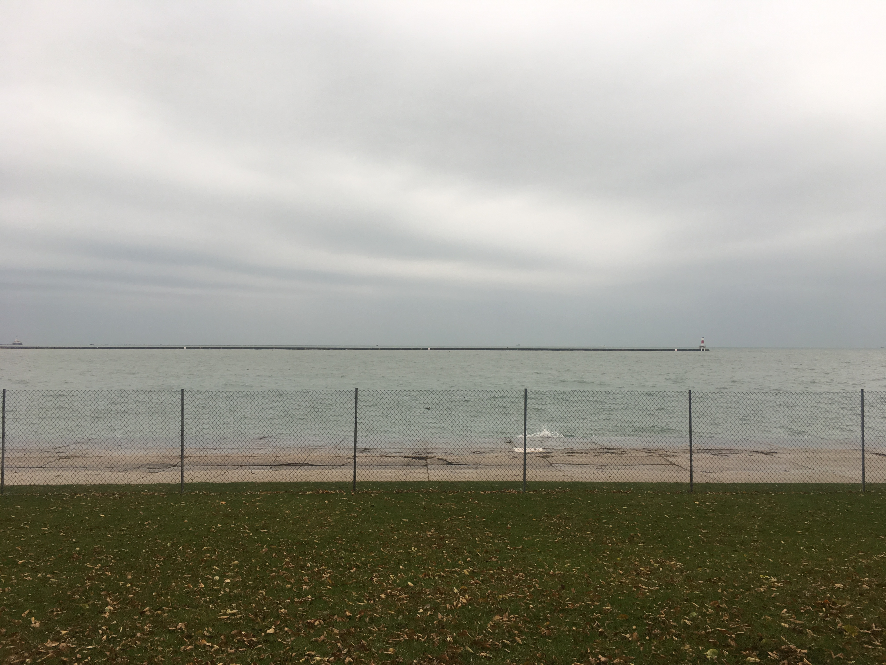
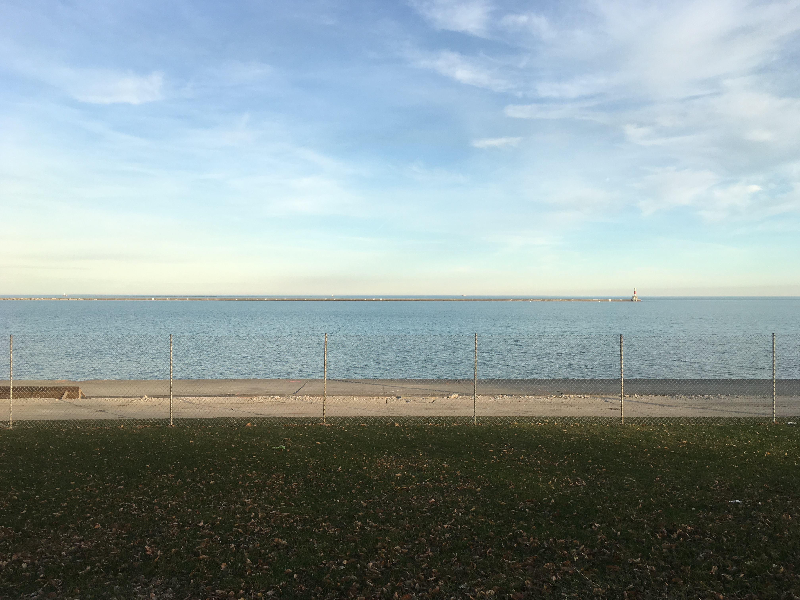

 11/17/17 |
 12/01/17 |
二〇一七年十一月十七日是一个周五，我收集了这一天的声音。十二月一日是另一个周五，我听着这段录音又度过了一天。
二〇一七年十一月十七日只是一天，我纪念它，练习它，失去它，也许和别的日子没什么两样。
17th November, 2017 is a Friday, I collected the sound of that day. 1st Decemeber is another Friday, I lived that day, listening to that sound track.
17th November, 2017 is just a day, maybe like everyday else. I commemorate it, practice it, and lose it as well.